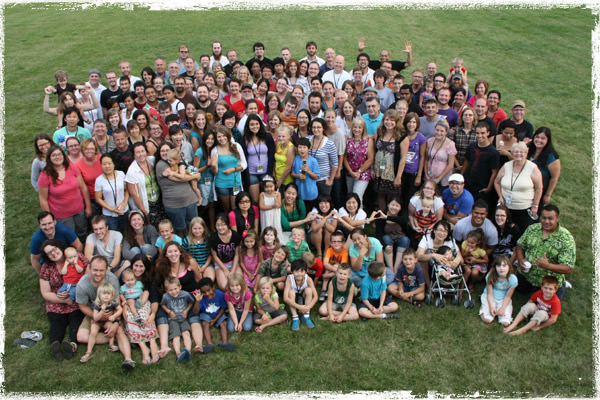
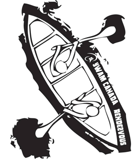
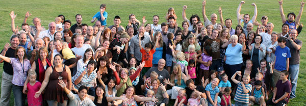

August 18 – 23, 2019
Winnipeg, Manitoba
Elim Chapel
(Due to legal reasons, we are not holding the Rendezvous at the Wilderness Edge this year.)
We want to see all 300+ YWAM Canada staff and leaders there to CELEBRATE YWAM CANADA!

The early exploration of what would become Canada by Europeans was undertaken largely by a group of daring men known as the voyageurs. Traversing huge sections of the land, they would gathering once or twice a year to trade furs, good, and stories. It soon became a time of friendship and celebration, a time of exploring new cultures and nurturing new ones. Such a gathering soon became known as a rendezvous.
What we are doing, is spending time in the middle of the city! Winnipeg is a vibrant city with lots going on. We conveners think this year is significant as we have been on a journey of understanding, reconciliation, and responding the the Truth and Reconciliation Commission. Terry and Bev Leblanc will be with us (https://www.naiits.com/faculty/) Terry is Mi’kmaq/Acadian Ph.D., D.D. (h.c.) ) Director of NAIITS/ Faculty of Theology, Anthropology, Community Development, Ph.D. Asbury Theological Seminary, 2012
Terry has been active in full-time vocational ministry with the Native North American community since 1978. He is currently CEO and Director of Indigenous Pathways overseeing the programs of My People, iEmergence, and NAIITS. He has been the recipient of three fellowships and the Student of Highest Distinction award. He completed his Ph.D. at Asbury Theological Seminary and was awarded the D.D. honoris causa by Acadia University in 2015.” There are several of us in YWAM Canada who are involved with NAIITS in some capacity or other. It will be good to hang out together.
We are excited to spend time together in worship, prayer, workshops, and more. The Farmer’s Market will return, so be sure to bring your treasure to sell (email to book a table). Whether it’s food, art, books, soap- whatever creative thing you can concoct! And bring some money to pick up of few treasures for birthday gifts, Christmas presents, or maybe something just for yourself.
Plan to arrive for the evening of Sunday (August 18) and to leave the morning of Friday (August 23). Book your flights accordingly.
For more information email us: rendezvous@ywamcanada.org
Registration:
REGISTRATION FEE = $200
1 Adult Registration
1 Adult Lunch, Supper, Snacks for the week (breakfast not provided)
$50 per child over 2 REGISTRATION
1 Child registration
1 Child lunch, supper, snack for the week (breakfast not provided)
There will also be a kids program.
Transportation:
Very easy to get to this part of town from the airport. Check it out!
Uber Winnipeg (https://www.uber.com/en-CA/cities/winnipeg/)
City Transit (https://winnipegtransit.com/en/other/systemmap)
$10 each way for coordinated YWAM pick up and drop off
We will be right downtown and close to cultural locations, restaurants, parks, pubs, rivers, and the Canada Museum of Human Rights
- 2km from the Forks and the Red River
- 1km from the Winnipeg Legislature and the Assiniboine River 500m to the Winnipeg Art Gallery
This year, we are all and each responsible for our own housing. You should reserves this sooner rather than later.
There are rooms across the street at the University of Winnipeg hostel for singles and couples. These will get booked up quickly so book there soon. You will need to book through them here: Hostel
There are also several Airbnb locations close to Elim Chapel (546 Portage Ave, Winnipeg, MB R3C 0G3). We hope that you will use this opportunity to room with others and invite people over to hang out.
The Holiday Inn is the closest hotel to Elim Chapel.
Sunday - 4pm-8pm: Registration & Settle in time
Daily Schedule: Monday to Thursday
7:15am to 8:15am - Devotional (Optional)
9:30am - Session #1: Family Time with everyone
10:15 - Break 10:45 - Session #2
12:20pm - Lunch
2:00pm - Afternoon activities/recreation
5:30pm - Supper
7:00pm - Session #3
9:30pm - Hang-Out Time
Friday - Departures
For more information email us: rendezvous@ywamcanada.org

YWAM International University Of The Nations YWAM Vancouver YWAM Organic YWAM City YWAM Associates International Mission Builders International Create - Emerge In Touch E-zine
Special Guest Speaker
Terry and Bev Leblanc (https://www.naiits.com/faculty/)
Terry is Mi’kmaq/Acadian Ph.D., D.D. (h.c.) ) Director of NAIITS/ Faculty of Theology, Anthropology, Community Development, Ph.D. Asbury Theological Seminary, 2012

Why Rendezvous? A Short History...
“Rendezvous” is a French word which means “a meeting at an appointed place and time”. In the early 1800’s, the First Nations people along with the French (voyageurs) and Scottish fur trappers met around current day Thunder Bay, Ontario which was their “Rendezvous”. The purpose for their meeting was to trade goods and furs and to talk business. But, it was so much more than that. As they assembled together, this diverse group shared stories about the land they were living in, danced, played competitive games, and simply enjoyed one another’s company.
Today, YWAM Canada’s “Rendezvous” is very much like those gatherings hundreds of years ago. The first “Rendezvous” for YWAM Canada was a North American Staff Conference held October 9-12, 2003 in Ottawa, Ontario. The gathering was a culmination of year-long activities throughout Canada that began with “The Goad” in Vancouver (October 2002) and “The Wake Tour” (April-June 2003). That first Canadian Thanksgiving weekend had a profound effect on YWAM Canada and therefore, we have called all future YWAM Canada biennial staff gatherings a “Rendezvous”.
Why do we continue to meet? We believe, as a YWAM Canada family, that it is important for us to have a “Rendezvous” every two years in order to gather together as one body. We come together to connect. We come together to remember who we are. We come together to remember why we do what we do. And, as we come together, we are able to receive fresh inspiration from God who longs to give us His heart for the people of Canada and beyond! Won’t you join us at the Rendezvous in August?